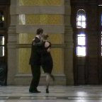
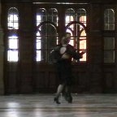

Videos
VideosTango Tipica at Riverside Museum performing to "Negracha" by Carel Kraayenhof y su Sexteto Canyengue, with kind permission.
Filming by Dean Kimmet and Brian Loudon; editing by Dean Kimmet. With special thanks to Riverside Museum, Glasgow.
Video of Tango Tipica performing to "En esta tarde gris", a beautiful tango by Mariano Mores and Jose Maria Contursi, played by the orquesta of Anibal Troilo (1941).
The video was directed and shot at the Kelvingrove Museum in Glasgow by Morgana McCabe and is part of the documentary "Recapturing the Golden Age of Tango".
 
Video of Tango Tipica performing to "Oblivion" by Astor Piazzolla, performed by the legendary bandoneon player Alfredo Marcucci and Ensemble Piacevole. Filming by Dean Kimmet. With kind permission from Channel Classics Records bv.
Theatrical performance to "Mala Junta". Shot by Morgana McCabe.
Video made at The 78, Glasgow. Shot by Morgana McCabe. The tango is "Que Te Importa Que Te Llore".
Tango Tipica: Argentinian Tango in Glasgow  Last verified: 6 April 2014
Last verified: 6 April 2014

 Videos
Videos